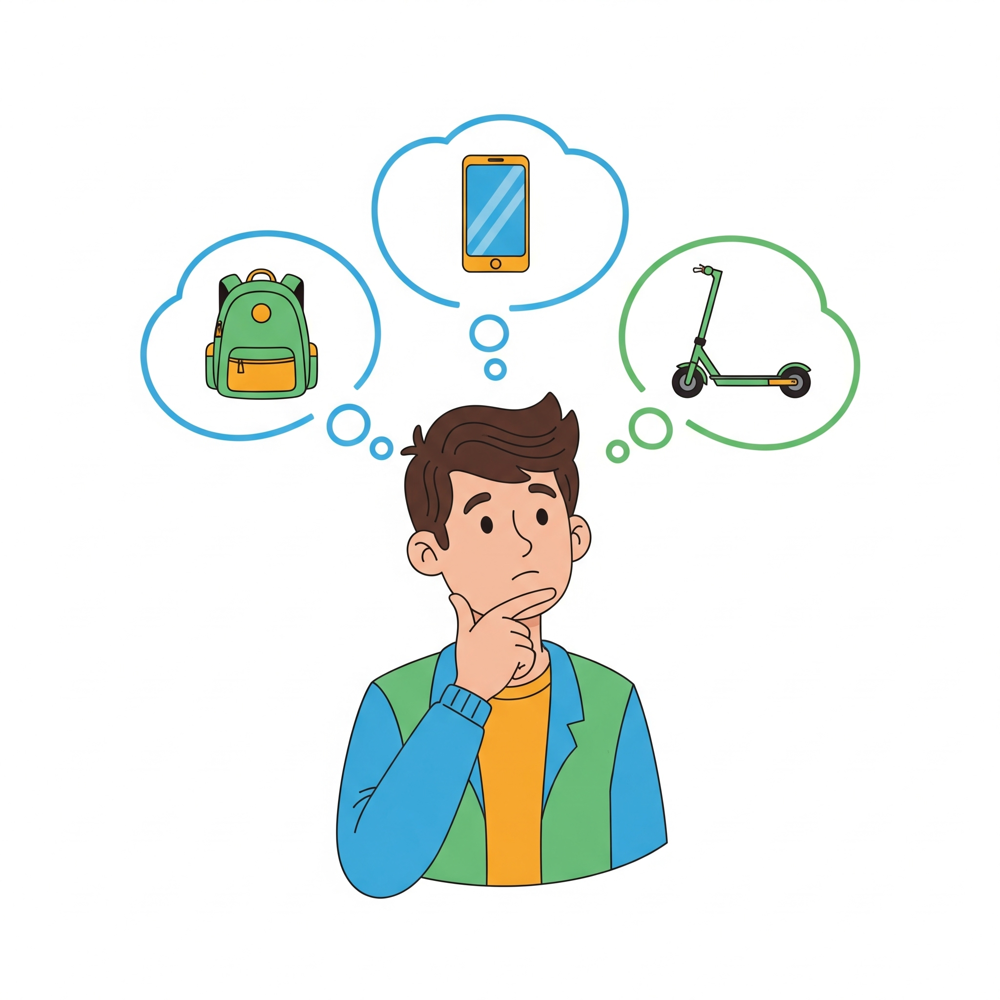
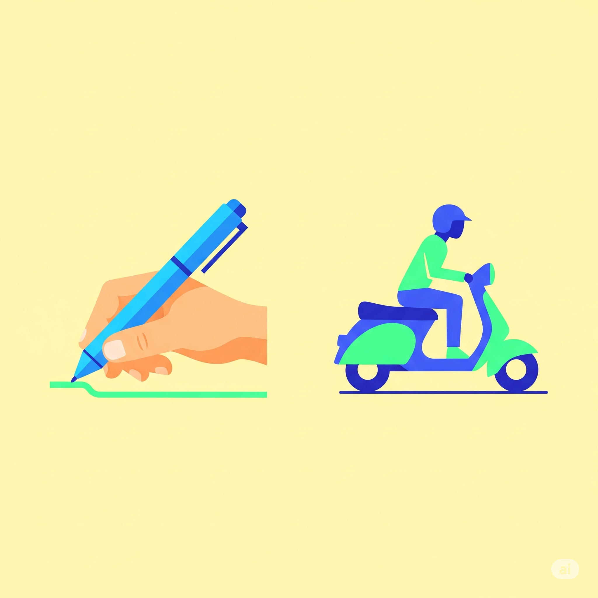
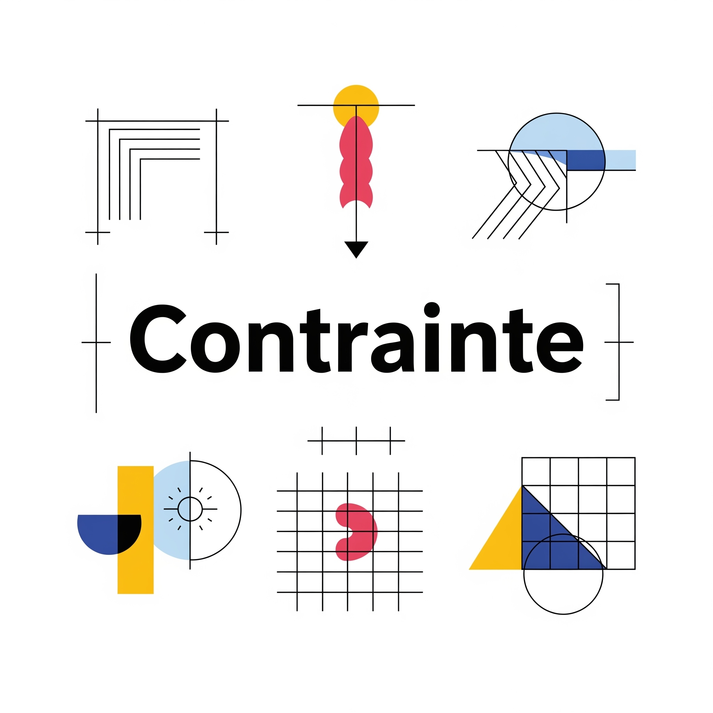
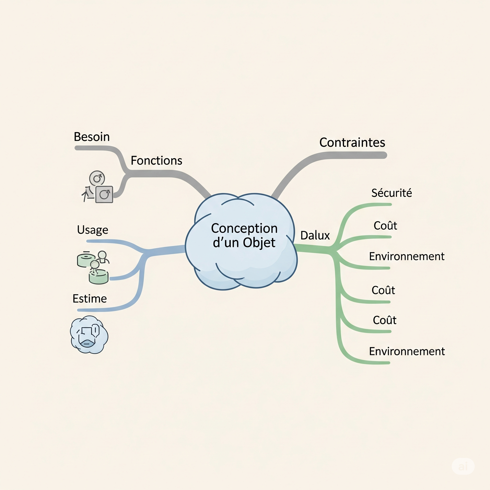

1. DE L'ANALYSE DU BESOIN AUX FONCTIONS DE L'OBJET
2. Situation Déclenchante : Le défi du sac parfait !
Le proviseur du collège a entendu parler de vos talents de designers en herbe et vous lance un défi : concevoir le sac à dos idéal pour les collégiens de 5ème. Mais par où commencer ? Comment transformer l'idée de Léo en un véritable objet ? Comment s'assurer qu'il sera non seulement pratique mais aussi super stylé et solide, sans être trop cher ? C'est le défi de tout designer !
3. Ta mission, si tu l'acceptes...
Compétences à maîtriser
- Identifier et formuler un besoin à partir d'une situation donnée.
- Distinguer la fonction d'usage principale de la fonction d'estime.
- Lister les différentes contraintes (techniques, économiques, esthétiques) qui s'appliquent à un objet technique.
Savoirs et connaissances à acquérir
- Besoin utilisateur.
- Fonction d'usage (à quoi sert l'objet ?).
- Fonction d'estime (l'image que l'objet renvoie).
- Contraintes (fonctionnement, sécurité, esthétique, économie, environnement).
4. Introduction et Problématique
Chaque jour, nous utilisons des dizaines d'objets sans y penser : un stylo pour écrire, un smartphone pour communiquer, une trottinette pour nous déplacer... Mais as-tu déjà réfléchi à leur création ? Aucun de ces objets n'est apparu par magie ! Ils sont tous le fruit d'une longue réflexion pour répondre à un problème ou une envie.
Le défi du sac à dos de Léo est un parfait exemple. Pour passer de son "ras-le-bol" à un produit fini, il faut suivre une méthode précise, celle des designers et des ingénieurs. Cette méthode commence toujours par la même question : à quel besoin doit-on répondre ?
Notre problématique centrale sera donc : Comment les concepteurs transforment-ils une simple idée ou un besoin en un objet technique réussi, qui remplit ses fonctions tout en respectant un ensemble de contraintes ?
Pour y répondre, nous explorerons d'abord le besoin utilisateur, puis nous analyserons les fonctions que doit remplir l'objet (son utilité et son style), et enfin, nous découvrirons les règles du jeu incontournables : les contraintes.
Concepts Clés Interactifs
Clique sur les cartes pour découvrir la définition des concepts que nous allons explorer.
Fonction d'Usage
À quoi sert l'objet ? C'est sa mission principale.
Fonction d'Estime
En quoi l'objet me plaît-il ? C'est son look, son style.
Contraintes
Quelles sont les règles à respecter ? (Prix, sécurité, etc.)
5. Développement du cours - Exploration en profondeur
Besoin Utilisateur
a) 🎓 Définition Académique et Enjeux
Le besoin utilisateur est le point de départ de toute innovation. Il représente une nécessité, un manque ou un désir ressenti par une ou plusieurs personnes, qui peut être satisfait par l'utilisation d'un produit ou d'un service. Identifier correctement le besoin est crucial : si on se trompe de besoin, même le meilleur objet du monde sera un échec.
b) 🧠 Analogie et Simplification Pédagogique
Imagine que le besoin, c'est comme avoir faim. Tu ne manges pas n'importe quoi au hasard. Tu as faim (c'est le besoin), et tu cherches une solution (manger une pomme, un sandwich, une pizza...). L'objet technique (le sandwich) est la réponse à ta faim (le besoin). Le besoin, c'est le "pourquoi" avant le "quoi".
c) 📱 Étude de Cas Concrète
- Sac à dos : Le besoin est de "transporter des affaires (cahiers, trousse, goûter) en gardant les mains libres et sans se faire mal au dos".
- Trottinette électrique : Le besoin est de "se déplacer rapidement et sans effort sur de courtes distances en ville".
- Smartphone : Le besoin est multiple ! "Communiquer à distance", "se divertir", "s'informer", "s'orienter"...
d) 🛠️ Décortiquage Technique - "Sous le Capot"
Comment trouver le besoin pour un nouveau drone de loisir ?
- Observer : Regarde ce que font les gens. Ils veulent prendre des photos de vacances originales, filmer leurs exploits sportifs, ou simplement s'amuser à piloter.
- Interroger : Pose des questions ! "Qu'est-ce qui vous frustre avec les drones actuels ?", "Qu'aimeriez-vous faire que vous ne pouvez pas ?". On pourrait découvrir un besoin : "filmer facilement des vidéos stables et de haute qualité sans être un pilote expert".
- Synthétiser : Formule le besoin par une phrase claire commençant par un verbe à l'infinitif : "Permettre à un débutant de réaliser des vidéos aériennes de qualité professionnelle".
e) 🤔 Points de Vigilance et Erreurs à Éviter
- Confondre le besoin et la solution : L'erreur classique est de dire "le besoin, c'est d'avoir un smartphone". Non ! Le besoin, c'est de communiquer. Le smartphone est une solution. Au 19ème siècle, le télégraphe était une autre solution au même besoin.
- N'interroger qu'une seule personne : Le besoin de ton meilleur ami n'est pas forcément celui de toute la classe. Il faut chercher le besoin partagé par le plus grand nombre.
f) 💡 Le Saviez-Vous ? / Anecdote Technologique
g) 🤝 Ponts Interdisciplinaires
- Histoire : L'étude des besoins permet de comprendre l'évolution des sociétés. Le besoin de conserver la nourriture a mené à l'invention du sel, des épices, puis du réfrigérateur !
- Français : Apprendre à formuler un besoin, c'est apprendre à exprimer une idée de manière claire et concise, en utilisant le bon vocabulaire (notamment les verbes à l'infinitif).
h) 🚀 Pour les Experts (Approfondissement)
Fonction d'Usage
a) 🎓 Définition Académique et Enjeux
La fonction d'usage (ou fonction principale) décrit l'action principale que l'objet doit réaliser pour répondre au besoin. Elle répond à la question : "À quoi sert l'objet ?". Elle est toujours formulée par un verbe à l'infinitif suivi d'un complément. Une bonne définition de la fonction d'usage est essentielle pour concevoir un objet qui... fonctionne !
b) 🧠 Analogie et Simplification Pédagogique
Si l'objet était un super-héros, sa fonction d'usage serait son super-pouvoir principal. Le super-pouvoir de Superman, c'est de "voler". Le super-pouvoir d'un marteau, c'est de "planter des clous". C'est sa mission n°1, ce pour quoi il a été créé.
c) 📱 Étude de Cas Concrète
- Stylo 4 couleurs : Permettre à l'utilisateur d'écrire avec différentes couleurs.
- Drone de loisir : Permettre de réaliser des prises de vue aériennes (photos ou vidéos).
- Sac à dos : Permettre de transporter des objets sur son dos.
d) 🛠️ Décortiquage Technique - "Sous le Capot"
Comment définir la fonction d'usage d'une trottinette électrique ?
- Identifier le besoin : "Se déplacer rapidement en ville".
- Poser la question clé : "À quoi sert principalement la trottinette électrique ?".
- Formuler la réponse : On commence par un verbe d'action. "Transporter" ? Oui, mais c'est un peu vague. "Déplacer une personne" ? Mieux !
- Préciser : On ajoute des détails importants. "Déplacer une personne d'un point A à un point B en milieu urbain". Voilà une fonction d'usage claire qui guidera la conception !
e) 🤔 Points de Vigilance et Erreurs à Éviter
- Être trop vague : Dire que la fonction d'usage d'un smartphone est "d'être utile" ne veut rien dire. Il faut être précis : "Permettre de communiquer à distance", "Permettre d'accéder à Internet"...
- Confondre avec les fonctions techniques : La fonction d'usage du drone est "réaliser des prises de vue". Les fonctions techniques sont les solutions pour y arriver : "faire tourner les hélices", "alimenter le moteur", "transmettre le signal vidéo".
f) 💡 Le Saviez-Vous ? / Anecdote Technologique
g) 🤝 Ponts Interdisciplinaires
- Physique-Chimie : Comprendre la fonction d'usage d'un objet pousse à s'interroger sur les principes physiques qui la rendent possible (l'électricité pour la trottinette, l'aérodynamisme pour le drone...).
- SVT : On peut comparer la fonction d'usage d'un objet à la fonction d'un organe dans le corps humain. La fonction du cœur est de "pomper le sang", celle des poumons est d'"assurer les échanges gazeux".
h) 🚀 Pour les Experts (Approfondissement)
Fonction d'Estime

a) 🎓 Définition Académique et Enjeux
La fonction d'estime est liée à l'apparence de l'objet, à son style, et à l'image qu'il renvoie à son propriétaire et aux autres. Elle répond à la question : "En quoi cet objet me plaît-il et me valorise-t-il ?". Elle est subjective (elle dépend des goûts de chacun) mais extrêmement importante pour le succès commercial d'un produit.
b) 🧠 Analogie et Simplification Pédagogique
La fonction d'estime, c'est le "look" de ton super-héros. Superman serait-il aussi populaire avec un costume marron et des chaussettes vertes ? Probablement pas ! Son costume bleu, rouge et jaune est iconique. La fonction d'estime, c'est ce qui fait qu'entre deux objets qui font la même chose (même fonction d'usage), tu en préfères un à l'autre parce que tu le trouves plus beau, plus cool, ou plus "toi".
c) 📱 Étude de Cas Concrète
- Smartphone : La couleur (noir sobre, or rose, bleu électrique), la matière (verre, métal, plastique), la finesse de l'appareil, le logo de la marque... tout cela participe à sa fonction d'estime.
- Sac à dos : Un sac à dos de randonnée n'a pas la même fonction d'estime qu'un sac de marque pour la ville. La forme, les couleurs, les motifs, la présence de logos influencent notre choix.
- Trottinette électrique : Un design épuré et futuriste ou un look plus robuste et sportif. L'éclairage LED peut aussi jouer un rôle important dans son style.
d) 🛠️ Décortiquage Technique - "Sous le Capot"
Comment analyser la fonction d'estime pour un stylo 4 couleurs ?
- Observer les variations : Regarde les différents modèles de stylos 4 couleurs qui existent. Certains sont transparents, d'autres opaques, d'autres métallisés, certains ont un grip confortable, d'autres des motifs de super-héros...
- Identifier les éléments de style : Note les couleurs du corps du stylo, la forme du clip, la texture du plastique, la typographie du logo.
- Se mettre à la place de l'utilisateur : Demande-toi ce que chaque style évoque. Un stylo argenté peut sembler plus "sérieux" ou "adulte". Un stylo avec des couleurs vives et un motif peut paraître plus "amusant" et "créatif". C'est ça, la fonction d'estime !
e) 🤔 Points de Vigilance et Erreurs à Éviter
- Penser que l'esthétique est secondaire : Beaucoup de projets échouent car la fonction d'estime a été négligée. Un objet peut être techniquement parfait, si les gens le trouvent laid, ils ne l'achèteront pas.
- Croire que les goûts sont universels : Ce qui est beau pour une personne en Europe peut être perçu différemment en Asie ou en Afrique. Les designers doivent s'adapter aux cultures.
f) 💡 Le Saviez-Vous ? / Anecdote Technologique
g) 🤝 Ponts Interdisciplinaires
- Arts Plastiques : C'est le lien le plus évident ! L'étude des couleurs, des formes, des textures, de l'harmonie... tout ce que tu apprends en arts plastiques est au cœur de la fonction d'estime.
- Sociologie / EMC : Analyser la fonction d'estime, c'est comprendre comment les objets deviennent des marqueurs sociaux (signes de richesse, d'appartenance à un groupe...).
h) 🚀 Pour les Experts (Approfondissement)
Les Contraintes
a) 🎓 Définition Académique et Enjeux
Une contrainte est une règle, une limite ou une obligation que le concepteur doit absolument respecter lors de la création de l'objet. C'est le "règlement du jeu". Ignorer une contrainte peut rendre l'objet invendable, dangereux ou illégal. Les contraintes encadrent la créativité et la rendent possible.
b) 🧠 Analogie et Simplification Pédagogique
Imagine que tu construis une cabane en LEGO®. Tu as une idée géniale (le besoin), tu sais qu'elle doit avoir un toit et une porte (fonction d'usage), et tu veux qu'elle soit super belle (fonction d'estime). Mais tu dois respecter des règles : tu n'as qu'un certain nombre de briques (contrainte économique), la cabane ne doit pas s'effondrer si on la touche (contrainte de sécurité), et elle doit tenir sur la plaque verte que tes parents t'ont donnée (contrainte de fonctionnement/dimension). Ces règles sont les contraintes !
c) 📱 Étude de Cas Concrète
Pour un drone de loisir, les contraintes sont nombreuses :
- De fonctionnement : Doit avoir une autonomie de vol d'au moins 20 minutes. Doit résister à un vent de 20 km/h.
- De sécurité : Les hélices doivent s'arrêter automatiquement en cas de choc. Le drone ne doit pas dépasser une certaine altitude (loi).
- Esthétiques : Doit avoir un look moderne et technologique (lié à la fonction d'estime).
- Économiques : Le coût de fabrication ne doit pas dépasser 150€ pour pouvoir le vendre à 299€.
- Environnementales : Doit être fabriqué avec des plastiques recyclables. L'emballage doit être en carton et non en plastique.
d) 🛠️ Décortiquage Technique - "Sous le Capot"
Comment lister les contraintes pour notre fameux sac à dos ?
- Fonctionnement : Le sac doit pouvoir contenir 3 grands cahiers, une trousse et un livre. Les bretelles doivent être réglables. Le tissu doit être imperméable.
- Sécurité : Les coutures doivent résister à un poids de 8 kg. Aucune petite pièce ne doit pouvoir se détacher (pour les plus jeunes). Des bandes réfléchissantes doivent être présentes pour être vu la nuit.
- Esthétique : Doit être disponible en 5 coloris tendance définis par le service marketing. Le logo doit être visible.
- Économique : Le prix de vente final ne doit pas excéder 40€.
- Environnementale : Le sac doit avoir une durée de vie d'au moins 2 ans. Les teintures utilisées ne doivent pas être toxiques.
Cet ensemble de règles s'appelle le cahier des charges fonctionnel (CDCF).
e) 🤔 Points de Vigilance et Erreurs à Éviter
- Oublier une contrainte : Oublier la contrainte de sécurité peut avoir des conséquences dramatiques. Oublier la contrainte de coût rend le projet irréalisable.
- Voir les contraintes comme des ennemis : Un bon designer ne voit pas les contraintes comme des freins, mais comme un défi stimulant qui guide sa créativité vers des solutions intelligentes.
f) 💡 Le Saviez-Vous ? / Anecdote Technologique
g) 🤝 Ponts Interdisciplinaires
- Mathématiques : Les contraintes sont souvent chiffrées : dimensions, poids, coût, performance... Les maths sont indispensables pour les vérifier.
- Réglementation (EMC) : De nombreuses contraintes (surtout de sécurité et d'environnement) sont imposées par la loi et les normes (NF, CE). C'est le lien entre la technique et la vie en société.
h) 🚀 Pour les Experts (Approfondissement)
6. Avenir et Perspectives : Les objets de demain
La manière de concevoir les objets évolue à toute vitesse ! Demain, de nouvelles contraintes deviendront encore plus importantes. La contrainte environnementale, par exemple, pousse les designers à inventer des objets plus faciles à réparer, à recycler, et qui consomment moins d'énergie. C'est ce qu'on appelle l'éco-conception.
L'intelligence artificielle (IA) va aussi bouleverser le design. Des IA peuvent désormais générer des milliers de formes d'objets en respectant des contraintes très précises, aidant les ingénieurs à trouver des solutions ultra-optimisées, parfois même surprenantes.
Les métiers liés à cette démarche évoluent : l'UX Designer (spécialiste de l'expérience utilisateur), l'Ingénieur en éco-conception, ou encore le Spécialiste en fabrication additive (impression 3D) sont des professions d'avenir qui se situent au carrefour de la technique, de la créativité et des besoins humains. Le défi sera de créer des objets toujours plus intelligents et utiles, tout en étant responsables pour la planète et justes pour la société.
7. Conclusion
Nous avons commencé avec le sac à dos cassé de Léo et nous terminons avec une méthode complète de conception. Pour répondre à notre problématique, nous pouvons maintenant affirmer que les concepteurs ne se fient pas au hasard. Ils transforment un besoin en un objet réussi grâce à une démarche structurée :
- Analyser le besoin : Comprendre le "pourquoi" avant tout.
- Définir les fonctions : Préciser ce que l'objet doit faire (fonction d'usage) et l'image qu'il doit renvoyer (fonction d'estime).
- Respecter les contraintes : Composer avec un cahier des charges strict (sécurité, coût, environnement...) qui encadre la création.
C'est cet équilibre délicat entre le besoin, la fonction et les contraintes qui est la clé de toute innovation réussie, du simple stylo 4 couleurs au drone le plus sophistiqué. Et maintenant, tu as les bases pour relever le défi du sac à dos parfait !
8. Exercices Interactifs
Exercice 1 : QCM
Le fait qu'un smartphone doive avoir une coque résistante aux chocs est avant tout :
Exercice 2 : Texte à trous
Pour créer un objet, on part d'un . L'objet doit remplir une principale, qui répond à la question "À quoi ça sert ?". Son apparence, qui le rend désirable, est sa . Enfin, le concepteur doit respecter des règles comme le prix ou la sécurité, qu'on appelle des .
Exercice 3 : Vrai ou Faux
"La fonction d'usage est la même chose que le besoin."
Exercice 4 : Question ouverte
En t'inspirant de l'exemple du sac à dos, cite deux contraintes (autres que le prix) qui pourraient s'appliquer à la conception d'un nouveau stylo 4 couleurs.
- Contrainte de sécurité : Le capuchon ou les petites pièces ne doivent pas pouvoir être avalés facilement par un jeune enfant (norme de sécurité sur les jouets).
- Contrainte de fonctionnement : L'encre ne doit pas sécher si le stylo reste ouvert pendant une heure. Le mécanisme de changement de couleur doit fonctionner au moins 5000 fois.
9. Synthèse Visuelle (Carte Mentale)
-
Conception d'un objet technique
-
1. Point de départ : Le Besoin
- Définition : Manque, nécessité
- Exemple : Se déplacer sans effort -> Trottinette
-
2. Les Fonctions de l'objet
-
Fonction d'Usage
- Question : À quoi ça sert ?
- Exemple : "Permettre d'écrire" (Stylo)
-
Fonction d'Estime
- Question : En quoi ça me plaît ?
- Exemple : "Couleur et finesse" (Smartphone)
-
Fonction d'Usage
-
3. Les Contraintes (Règles du jeu)
- Fonctionnement (ex: autonomie)
- Sécurité (ex: normes CE)
- Esthétique (ex: couleurs imposées)
- Économique (ex: coût maximal)
- Environnementale (ex: matériaux recyclables)
-
1. Point de départ : Le Besoin
10. Lexique / Glossaire
- Besoin
- Exigence ou nécessité pour un utilisateur qui est à l'origine de la création d'un produit.
- Cahier des Charges Fonctionnel (CDCF)
- Document qui liste toutes les fonctions et contraintes que l'objet doit respecter.
- Contrainte
- Règle, limite ou obligation à respecter lors de la conception d'un objet.
- Design
- Discipline visant à créer des objets (ou services, etc.) à la fois fonctionnels, esthétiques et adaptés aux besoins des utilisateurs.
- Éco-conception
- Démarche qui intègre les aspects environnementaux dès la phase de conception d'un produit, pour en réduire les impacts sur la planète tout au long de sa vie.
- Fonction d'Estime
- Fonction liée à l'esthétique de l'objet et à l'image qu'il renvoie. Elle répond au besoin de plaire à l'utilisateur.
- Fonction d'Usage
- Action principale réalisée par l'objet pour répondre au besoin de l'utilisateur.
- Innovation
- Introduction d'une nouveauté (un nouveau produit, un nouveau procédé) qui apporte une amélioration et trouve son public.
11. Pour aller plus loin
🚀 Mini-projet à réaliser
Choisis un objet simple de ta trousse (gomme, règle, compas...). Rédige son "mini cahier des charges" en 3 points : sa fonction d'usage principale, 2 éléments de sa fonction d'estime, et 3 contraintes (sécurité, coût, dimensions) qu'il doit respecter. Tu peux même imaginer et dessiner une version améliorée !
🎬 Vidéo à regarder
Cherche sur YouTube "C'est pas sorcier - Le design". Fred et Jamy t'expliqueront avec plein d'exemples concrets comment les designers travaillent pour créer les objets qui nous entourent. C'est une excellente introduction visuelle !
🧑🎨 Métier à découvrir
Le métier de Designer Produit (ou Designer Industriel). Ce créatif imagine et dessine les objets de demain, des voitures aux brosses à dents. Il doit allier un grand sens artistique, une bonne compréhension technique et une vraie curiosité pour les besoins des gens. Il travaille souvent sur des logiciels de dessin 3D.